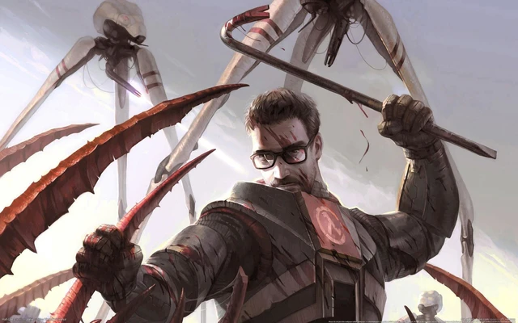
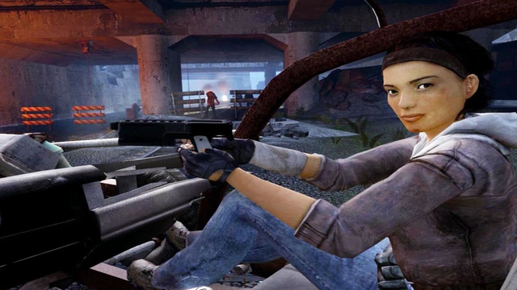

Half-Life 3 chuẩn bị ra mắt, game thủ tìm thấy chứng cứ cực kỳ thuyết phục
Nếu thông tin này là thật, chắc chắn nhiều game thủ sẽ cảm thấy vui mừng hơn bao giờ hết.
Half-Life 3 từ lâu đã luôn là một trong những tựa game được nhiều người chơi chờ đợi bậc nhất.
Vì lẽ đơn giản, Half-Life đã trở thành series có lượng fan hâm mộ khổng lồ và cũng đã quá lâu rồi, Valve chưa có bất kỳ động thái nào cho thấy muốn hồi sinh series này. Rất nhiều đồn đoán đã nổ ra, nhưng phần lớn đều không thực tế và bản thân nhà phát triển vẫn chỉ duy trì sự im lặng. Thế nhưng rất có thể, mọi thứ sẽ thay đổi trong thời gian sắp tới.
Cụ thể, một số game thủ và các fan hâm mộ của Half-Life đã nhận thấy một trò chơi chưa được Valve công bố trên Steam, thậm chí còn có cả máy chủ nhiều người chơi đi kèm.
Nhiều người cho rằng đây rất có khả năng là "HLX" - tựa game được cho là Half-Life 3, phần tiếp theo không phải VR của Alyx và Episode Two. Tuy nhiên, liệu danh sách trên SteamDB này có thực sự là HLX hay không vẫn chưa rõ ràng và về cơ bản, tựa game mới này vẫn đang nằm trong vòng bí mật. Nhưng nếu nó liên quan đến Half-Life, thì yếu tố nhiều người chơi là một chi tiết mới thú vị.

Một tựa game Half-Life với máy chủ nhiều người chơi có thể không phải là điều mà các fan mong đợi. Thế nhưng nên nhớ rằng, Half-Life 3 có thể sẽ sở hữu chế độ Deathmatch của riêng mình. Điều này cũng góp phần giải thích cho việc một máy chủ nhiều người chơi tồn tại. Thế nhưng như đã đề cập ở trên, việc đây có phải là Half-Life 3 hay không vẫn là giả thuyết khá mong manh.
Có thể Valve sẽ hồi sinh series Half-Life, có thể không nhất là trong bối cảnh Deadlock - trò chơi rất được kỳ vọng của nhà phát triển này thậm chí còn chưa ra mắt.